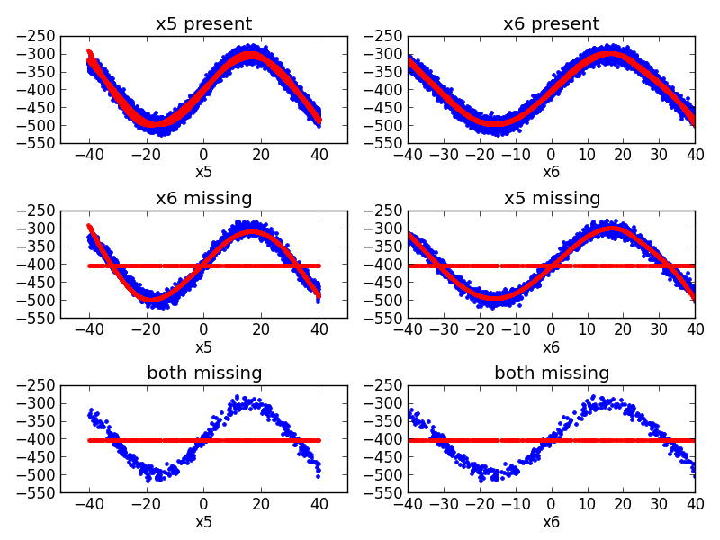

Plotting sine function with redundant predictors an missing data¶
An example plotting a fit of the sine function. There are two redundant predictors, each of which has independent and random missingness.
Out:
Forward Pass
---------------------------------------------------------------------
iter parent var knot mse terms gcv rsq grsq
---------------------------------------------------------------------
0 - - - 4399.475105 1 4400.355 0.000 0.000
1 0 6 8411 3218.545560 5 3229.517 0.268 0.266
2 1 6 3011 1000.863126 7 1005.886 0.773 0.771
3 4 5 8403 775.817661 11 782.219 0.824 0.822
4 7 5 3044 315.047518 13 318.158 0.928 0.928
5 0 6 7211 291.456356 15 294.808 0.934 0.933
6 5 6 911 275.915763 17 279.538 0.937 0.936
7 13 6 3811 270.854296 19 274.852 0.938 0.938
8 9 5 7233 266.414253 21 270.783 0.939 0.938
9 10 7 2401 262.589150 25 267.758 0.940 0.939
10 24 3 6263 257.376406 29 263.293 0.941 0.940
---------------------------------------------------------------------
Stopping Condition 0: Reached maximum number of terms
Pruning Pass
----------------------------------------------------
iter bf terms mse gcv rsq grsq
----------------------------------------------------
0 - 29 257.38 263.293 0.941 0.940
1 2 28 257.38 263.080 0.941 0.940
2 10 27 257.38 262.868 0.941 0.940
3 28 26 257.38 262.655 0.941 0.940
4 24 25 257.38 262.443 0.941 0.940
5 8 24 257.38 262.231 0.941 0.940
6 3 23 257.38 262.020 0.941 0.940
7 19 22 257.43 261.858 0.941 0.940
8 22 21 257.85 262.074 0.941 0.940
9 18 20 258.36 262.387 0.941 0.940
10 5 19 258.66 262.481 0.941 0.940
11 26 18 260.20 263.833 0.941 0.940
12 23 17 261.86 265.296 0.940 0.940
13 27 16 262.18 265.412 0.940 0.940
14 15 15 263.93 266.965 0.940 0.939
15 21 14 266.66 269.511 0.939 0.939
16 25 13 269.03 271.682 0.939 0.938
17 12 12 272.85 275.325 0.938 0.937
18 13 11 280.73 283.044 0.936 0.936
19 16 10 298.55 300.768 0.932 0.932
20 6 9 392.19 394.792 0.911 0.910
21 9 8 812.25 816.984 0.815 0.814
22 20 7 876.11 880.506 0.801 0.800
23 11 6 1009.68 1013.938 0.770 0.770
24 7 5 1078.57 1082.247 0.755 0.754
25 14 4 3275.88 3284.414 0.255 0.254
26 4 3 3587.50 3593.961 0.185 0.183
27 17 2 4034.07 4038.107 0.083 0.082
28 1 1 4399.48 4400.355 -0.000 -0.000
----------------------------------------------------
Selected iteration: 7
Earth Model
------------------------------------------------------------------------------------------------------------------------------------
Basis Function Pruned Coefficient
------------------------------------------------------------------------------------------------------------------------------------
(Intercept) No -215.536
C(x6|s=+1,NAN,-24.506,-18.5194)*present(x6) No -21.4704
C(x6|s=-1,NAN,-24.506,-18.5194)*present(x6) Yes None
present(x6) Yes None
missing(x6) No -209.533
C(x6|s=+1,5.4053,9.48699,20.0742)*C(x6|s=+1,NAN,-24.506,-18.5194)*present(x6) No -0.108466
C(x6|s=-1,5.4053,9.48699,20.0742)*C(x6|s=+1,NAN,-24.506,-18.5194)*present(x6) No -0.169322
C(x5|s=+1,NAN,-24.5341,-18.6855)*present(x5)*missing(x6) No 11.963
C(x5|s=-1,NAN,-24.5341,-18.6855)*present(x5)*missing(x6) Yes None
present(x5)*missing(x6) No -302.191
missing(x5)*missing(x6) Yes None
C(x5|s=+1,-1.78052,9.27579,NAN)*C(x5|s=+1,NAN,-24.5341,-18.6855)*present(x5)*missing(x6) No -0.267958
C(x5|s=-1,-1.78052,9.27579,NAN)*C(x5|s=+1,NAN,-24.5341,-18.6855)*present(x5)*missing(x6) No 0.13054
C(x6|s=+1,-18.5194,-12.5327,-5.60455)*present(x6) No 30.0289
C(x6|s=-1,-18.5194,-12.5327,-5.60455)*present(x6) No -20.3807
C(x6|s=+1,20.0742,30.6613,NAN)*C(x6|s=+1,5.4053,9.48699,20.0742)*C(x6|s=+1,NAN,-24.506,-18.5194)*present(x6) No -0.000177273
C(x6|s=-1,20.0742,30.6613,NAN)*C(x6|s=+1,5.4053,9.48699,20.0742)*C(x6|s=+1,NAN,-24.506,-18.5194)*present(x6) No 0.00184362
C(x6|s=+1,-5.60455,1.32361,5.4053)*C(x6|s=+1,-18.5194,-12.5327,-5.60455)*present(x6) No -0.123562
C(x6|s=-1,-5.60455,1.32361,5.4053)*C(x6|s=+1,-18.5194,-12.5327,-5.60455)*present(x6) No 0.205846
C(x5|s=+1,-18.6855,-12.8368,-1.78052)*present(x5)*missing(x6) Yes None
C(x5|s=-1,-18.6855,-12.8368,-1.78052)*present(x5)*missing(x6) No 24.4133
C(x7|s=+1,NAN,15.6535,NAN)*present(x7)*missing(x5)*missing(x6) No -0.20499
C(x7|s=-1,NAN,15.6535,NAN)*present(x7)*missing(x5)*missing(x6) No 1.42109e-14
present(x7)*missing(x5)*missing(x6) No 18.9562
missing(x7)*missing(x5)*missing(x6) Yes None
C(x3|s=+1,NAN,-1.38678,NAN)*present(x3)*missing(x7)*missing(x5)*missing(x6) No -0.596508
C(x3|s=-1,NAN,-1.38678,NAN)*present(x3)*missing(x7)*missing(x5)*missing(x6) No 0
present(x3)*missing(x7)*missing(x5)*missing(x6) No 16.9676
missing(x3)*missing(x7)*missing(x5)*missing(x6) Yes None
------------------------------------------------------------------------------------------------------------------------------------
MSE: 297.4538, GCV: 302.5757, RSQ: 0.9324, GRSQ: 0.9312
import numpy
import matplotlib.pyplot as plt
from pyearth import Earth
# Create some fake data
numpy.random.seed(2)
m = 10000
n = 10
X = 80 * numpy.random.uniform(size=(m, n)) - 40
X[:, 5] = X[:, 6] + numpy.random.normal(0, .1, m)
y = 100 * \
(numpy.sin((X[:, 5] + X[:, 6]) / 20) - 4.0) + \
10 * numpy.random.normal(size=m)
missing = numpy.random.binomial(1, .2, (m, n)).astype(bool)
X_full = X.copy()
X[missing] = None
idx5 = (1 - missing[:, 5]).astype(bool)
idx6 = (1 - missing[:, 6]).astype(bool)
# Fit an Earth model
model = Earth(max_degree=5, minspan_alpha=.5, allow_missing=True,
enable_pruning=True, thresh=1e-15, smooth=True)
model.fit(X, y)
# Print the model
print(model.trace())
print(model.summary())
# Plot the model
y_hat = model.predict(X)
fig = plt.figure()
ax1 = fig.add_subplot(3, 2, 1)
ax1.plot(X_full[idx5, 5], y[idx5], 'b.')
ax1.plot(X_full[idx5, 5], y_hat[idx5], 'r.')
ax1.set_xlim(-40,40)
ax1.set_title('x5 present')
ax1.set_xlabel('x5')
ax2 = fig.add_subplot(3, 2, 2)
ax2.plot(X_full[idx6, 6], y[idx6], 'b.')
ax2.plot(X_full[idx6, 6], y_hat[idx6], 'r.')
ax2.set_xlim(-40,40)
ax2.set_title('x6 present')
ax2.set_xlabel('x6')
ax3 = fig.add_subplot(3, 2, 3, sharex=ax1)
ax3.plot(X_full[~idx6, 5], y[~idx6], 'b.')
ax3.plot(X_full[~idx6, 5], y_hat[~idx6], 'r.')
ax3.set_title('x6 missing')
ax3.set_xlabel('x5')
ax4 = fig.add_subplot(3, 2, 4, sharex=ax2)
ax4.plot(X_full[~idx5, 6], y[~idx5], 'b.')
ax4.plot(X_full[~idx5, 6], y_hat[~idx5], 'r.')
ax4.set_title('x5 missing')
ax4.set_xlabel('x6')
ax5 = fig.add_subplot(3, 2, 5,sharex=ax1)
ax5.plot(X_full[(~idx6) & (~idx5), 5], y[(~idx6) & (~idx5)], 'b.')
ax5.plot(X_full[(~idx6) & (~idx5), 5], y_hat[(~idx6) & (~idx5)], 'r.')
ax5.set_title('both missing')
ax5.set_xlabel('x5')
ax6 = fig.add_subplot(3, 2, 6, sharex=ax2)
ax6.plot(X_full[(~idx6) & (~idx5), 6], y[(~idx6) & (~idx5)], 'b.')
ax6.plot(X_full[(~idx6) & (~idx5), 6], y_hat[(~idx6) & (~idx5)], 'r.')
ax6.set_title('both missing')
ax6.set_xlabel('x6')
fig.tight_layout()
plt.show()
Total running time of the script: (0 minutes 14.888 seconds)
Download Python source code:
plot_missing_data_problem.py
Download IPython notebook:
plot_missing_data_problem.ipynb